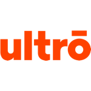

Expérience
Ultrō, Aix-en-Provence – 2017
Stage de quatre mois.

Agence 1989, Aix-en-Provence – 2016
Stage de quatre mois. Design graphique. Conception de site web. Prototypage. Intégration et gestion de contenu. Développement web. Appels d’offres. Clients : Michelin, Volkswagen Group Fleet Solutions, U2P.

Office de tourisme, Fuveau – 2015
Stage d’un mois. Accueil des visiteurs. Communication via les réseaux sociaux et le site officiel. Création d’un circuit thématique. Participation à des réunions avec la Communauté du Pays d’Aix. Missions touristiques diverses et variées.
Musée de la mine, Gréasque – 2014
Stage de deux mois et emploi saisonnier de deux semaines. Visites guidées et accueil des visiteurs. Mailing et e-mailing. Traduction de documents du français à l’anglais. Réalisation d’affiches.